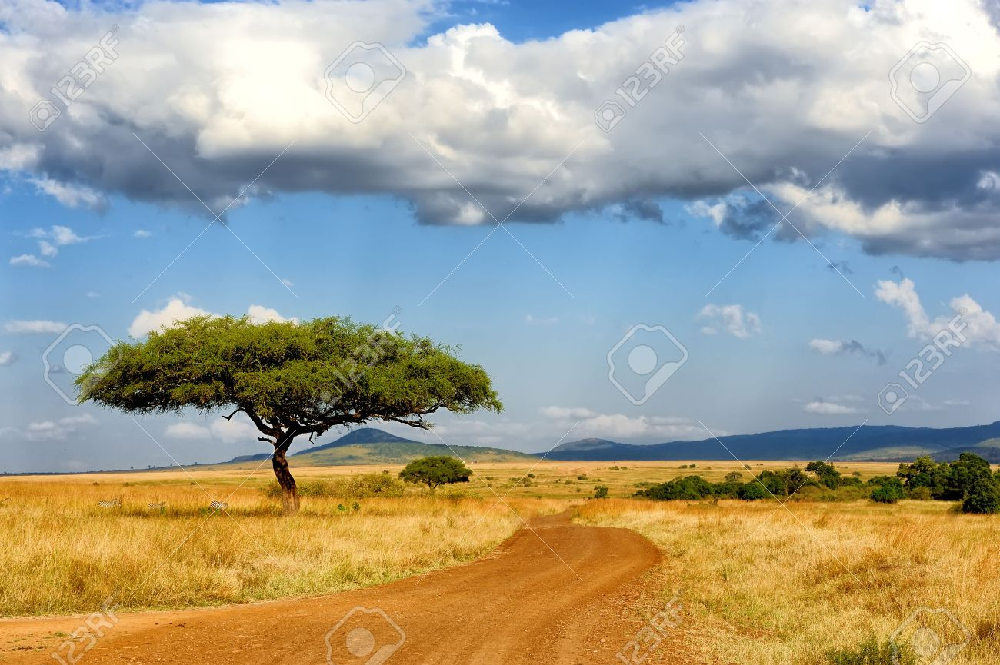

Africa
 |
 |
ทวีปแอฟริกาเป็นทวีปที่มีขนาดใหญ่เป็นอันดับ 2 ของโลก มีทะเลเมดิเตอร์เรเนียนเป็นพรมแดนระหว่างทวีปยุโรปทางตอนเหนือ และมีคลองสุเอซเป็นพรมแดนระหว่างทวีปเอเชียทางตะวันออกเฉียงเหนือ จุดเด่นของทวีปแอฟริกาคือ มีที่ราบสูงถึง 2 ใน 3 ของทวีป โดยเฉพาะทางภาคตะวันออกของทวีป เป็นที่ราบสูงโดยเฉลี่ยประมาณ 1,500 - 2,000 เมตรจากระดับน้ำทะเล มีแนวภูเขาไฟที่ดับแล้ว มีแนวทะเลสาบขนาดใหญ่ แล้วจะลาดต่ำไปทางตะวันตก มีเกาะมาดากัสการ์
1. เทือกเขา แบ่งออกเป็น 2 เขตคือ
-เขตภูเขาทางภาคเหนือ เป็นเขตเทือกเขาเกิดใหม่อายุราวพอ ๆ กับเทือกเขาแอลป์ในทวีปยุโรป เรียกว่า เทือกเขาแอตลาส ขนานไปกับชายฝั่งทะเลเมดิเตอร์เรเนียน ในเขตพื้นที่ประเทศโมร็อกโก แอลจีเรีย และตูนิเซีย
-เขตภูเขาทางภาคใต้ ได้แก่ เทือกเขาดราเคนสเบิร์ก ในประเทศแอฟริกาใต้และเลโซโท
2.ทะเลทราย แบ่งเป็น 2 เขตคือ
-เขตทะเลทรายตอนเหนือ ได้แก่ ทะเลทรายสะฮารา (ซึ่งเป็นทะเลทรายที่มีขนาดใหญ่ที่สุดในโลก) และทะเลทรายลิเบีย บริเวณนี้จะเกิดลมร้อนในทะเลทรายสะฮารา เรียกว่า ซิร็อกโก
-เขตทะเลทรายตอนใต้ ได้แก่ ทะเลทรายนามิบ และทะเลทรายคาลาฮารี